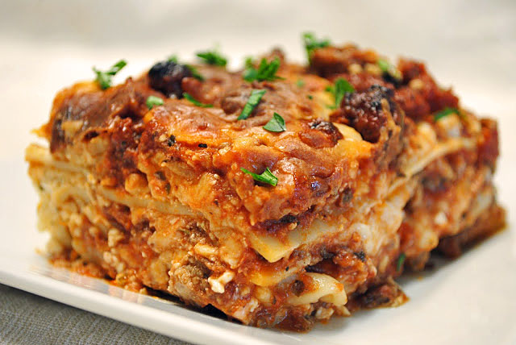

Tom's Top Lasagna Recipe

Description
Craving the comforting embrace of a perfectly layered lasagna? Well you're in luck, because we've got you covered with our lasagna recipe that will transport your taste buds to the heart of Italy.
Go ahead and indulge in the goodness of your soon to be homemade lasagna. Buon appetito!
Lasagna Ingredients
- Ground beef - We used 80/20 beef for a juicier meal
- Onion - we use yellow or sweet onion
- Garlic cloves - at least 1, but add more if you like
- Red wine (or beef broth) - This amps up the flavor of your sauce (avoid using cooking wine).
- Marinara sauce
- Dried Thyme - Italian seasoning, basil, or oregano can be substituted.
- Sugar (optional) - Balances the acidity of the tomatoes.
- Parsley - Flat leaf or curly parsley works well.
- Lasagna noodles - Cook these al dente; they'll continue to soften as the lasagna bakes
- Cottage cheese - Adds great texture and moisture.
- Ricotta cheese - We use low-fat or part-skim.
- Mozzarella cheese - An Italian cheese blend works, but mozzarella is definitely the classic choice.
- Egg - Helps hold the cheese layer together.
Steps
- Brown the beef - Add oil to a deep pan and sautee onion and beef until browned, 5 minutes then add garlic and stir another minute.
- Finish the sauce - Pour in 1/4 cup of wine and stir until almost evaporated. Add marinara, salt, pepper, thyme, sugar (optional), and parsley; bring to a simmer, then cover and cook 5 minutes.
- Make the cheese filling - Combine all of the cheese sauce ingredients and 1 cup of mozzarella in a mixing bowl (reserve the rest for later).
- Prep - Preheat your oven to 375ºF and cook the lasagna noodles in a pot of well-salted water until al dente.
- Assemble - Spread 1/2 cup of the meat sauce on the bottom of a 9x13-inch casserole dish. Add 3 noodles, followed by 1/3 of the meat sauce, 1 cup of mozzarella, and half of the ricotta mixture. Repeat, then for the top layer, add 3 noodles, 1/3 of the meat sauce, and the remaining mozzarella.
- Bake - Cover with foil and bake at 375˚F for 45 minutes, then remove the foil and broil for 3 to 5 minutes, or until the cheese is lightly browned.
- Rest - Let the lasagna rest for about 30 minutes before cutting and serving.
- Enjoy!
Pro Tip:
- There’s nothing worse than having the top portion of cheese stuck to the foil. To prevent this, we poke 8-10 toothpicks evenly around the top of the lasagna, pushing them in halfway to keep the foil from touching the cheese. Just be sure to count and remove every toothpick prior to serving.